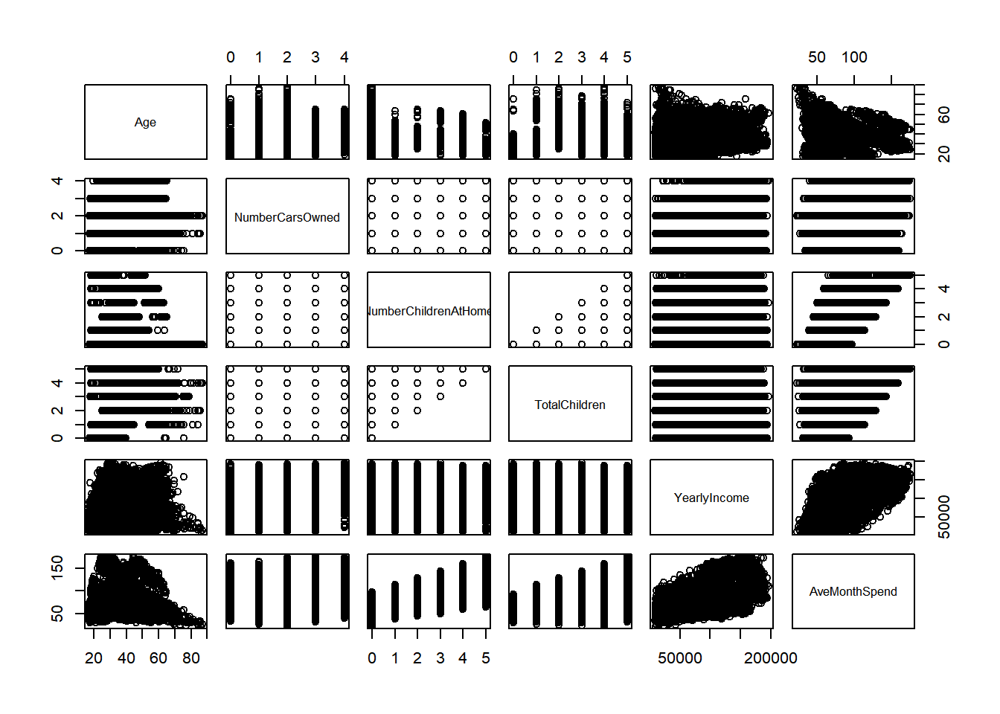
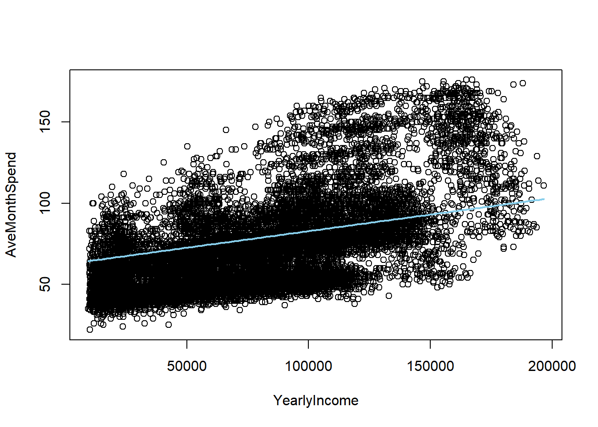

This is the part of the project where we will predict the average monthly spent amount based on the info we have. We still don’t know which variables we will take into account, we just want to get a predictive model.
library(readr)
library(dbplyr)
library(ggplot2)
library(tidyverse)
library(ggplot2)
library(data.table)
library(DT)
library(pander)
library(scales)
library(cowplot)
library(shiny)
library(eeptools)#for changing the DOB to ageWe download and clean the data (see the Visualization tab for a detailed explanation of this process).
customer <- read_csv("~/CS 499 Senior Project/datasets/AdvWorksCusts.csv")
spend <- read_csv("~/CS 499 Senior Project/datasets/AW_AveMonthSpend.csv")
bikebuyer <- read_csv("~/CS 499 Senior Project/datasets/AW_BikeBuyer.csv")
three_datasets <- data.frame(customer, spend, bikebuyer)
data_clean <- select(three_datasets,-c(CustomerID.1, CustomerID.2))
missing_values <- sapply(data_clean, function(x) sum(is.na(x))) #it checks number of missing values by column
data_clean <- select(three_datasets,-c(CustomerID.1, CustomerID.2, Title, MiddleName, Suffix, AddressLine2))
data_clean <- data_clean[!duplicated(data_clean), ] #it removes duplicatesHere’s a summary of the data. We can see that there abour 6 continuos variables. Let us remember that our response variable, what we’re trying to predict, is the \(AveMonthSpend\) variable.
data_clean %>% summary.data.frame()Here you can see the first few rows of the dataset to get a feel of the data.
datatable(head(data_clean))Our null hypothesis is that the variation in AveMOnthSpend is due to randomization, and not due to the variation of other variables. In other words, other variables cannot explain the AveMonthSpend.
Let’s start at visualizing the variables.
###Let's add up age column using the existing DOB column
#Change BirthDate from Character to Date format
data_clean$BirthDate <- as.Date(data_clean$BirthDate, format = "%m/%d/%Y")
#Append the new column called Age
data_clean$Age <- as.numeric(difftime("1998-01-01",data_clean$BirthDate, units = "weeks"))/52.25
data_qualitative <- data_clean %>% select(11:15)
data_quantitative <- data_clean %>% select(c(22,16:20))
plot(data_quantitative)
I see some sort of relationship between Age, YearlyIncome, TotalChildren, and NumberChildrenAtHome.
NOTE: We might consider NumberChildrenAtHome as a discrete variable or factor, but I think it’s better if we keep it as continuous.
As per the qualitative variables, you can refer back to my EDA window.
(Summary: Categorical features such as occupation, gender, marital status and home owner flag have distinct relationships with average month spend. The quartiles are of different levels. It seems that Males spend more on average than females same for married and homeowners)
#creating a smaller data frame with the features that seem to play a role
features <- cbind(data_qualitative,data_quantitative)
head(features)## Education Occupation Gender MaritalStatus HomeOwnerFlag Age
## 1 Bachelors Professional M M 1 31.69150
## 2 Bachelors Professional M S 0 32.59102
## 3 Bachelors Professional M M 1 32.34495
## 4 Bachelors Professional F S 0 29.83778
## 5 Bachelors Professional F S 1 29.35931
## 6 Bachelors Professional M S 1 32.36409
## NumberCarsOwned NumberChildrenAtHome TotalChildren YearlyIncome AveMonthSpend
## 1 0 0 2 137947 89
## 2 1 3 3 101141 117
## 3 1 3 3 91945 123
## 4 1 0 0 86688 50
## 5 4 5 5 92771 95
## 6 1 0 0 103199 78Let’s start with building our model
#We'll use a forward approach. We'll start from most simple to most complex
model1 <- lm(AveMonthSpend ~ YearlyIncome, data = features)
summary(model1)##
## Call:
## lm(formula = AveMonthSpend ~ YearlyIncome, data = features)
##
## Residuals:
## Min 1Q Median 3Q Max
## -55.644 -14.729 -2.715 10.422 81.405
##
## Coefficients:
## Estimate Std. Error t value Pr(>|t|)
## (Intercept) 3.981e+01 3.731e-01 106.71 <2e-16 ***
## YearlyIncome 4.171e-04 4.256e-06 97.99 <2e-16 ***
## ---
## Signif. codes: 0 '***' 0.001 '**' 0.01 '*' 0.05 '.' 0.1 ' ' 1
##
## Residual standard error: 21.66 on 16419 degrees of freedom
## Multiple R-squared: 0.369, Adjusted R-squared: 0.369
## F-statistic: 9602 on 1 and 16419 DF, p-value: < 2.2e-16model2 <- lm(AveMonthSpend ~ YearlyIncome + NumberChildrenAtHome, data = features)
summary(model2)##
## Call:
## lm(formula = AveMonthSpend ~ YearlyIncome + NumberChildrenAtHome,
## data = features)
##
## Residuals:
## Min 1Q Median 3Q Max
## -49.282 -13.160 -1.241 13.365 43.011
##
## Coefficients:
## Estimate Std. Error t value Pr(>|t|)
## (Intercept) 4.085e+01 2.712e-01 150.63 <2e-16 ***
## YearlyIncome 2.698e-04 3.322e-06 81.21 <2e-16 ***
## NumberChildrenAtHome 1.056e+01 8.715e-02 121.21 <2e-16 ***
## ---
## Signif. codes: 0 '***' 0.001 '**' 0.01 '*' 0.05 '.' 0.1 ' ' 1
##
## Residual standard error: 15.74 on 16418 degrees of freedom
## Multiple R-squared: 0.667, Adjusted R-squared: 0.667
## F-statistic: 1.644e+04 on 2 and 16418 DF, p-value: < 2.2e-16model3 <- lm(AveMonthSpend ~ YearlyIncome + NumberChildrenAtHome + TotalChildren, data = features)
summary(model3)##
## Call:
## lm(formula = AveMonthSpend ~ YearlyIncome + NumberChildrenAtHome +
## TotalChildren, data = features)
##
## Residuals:
## Min 1Q Median 3Q Max
## -49.986 -13.133 -1.167 13.333 43.127
##
## Coefficients:
## Estimate Std. Error t value Pr(>|t|)
## (Intercept) 4.140e+01 2.837e-01 145.917 < 2e-16 ***
## YearlyIncome 2.737e-04 3.371e-06 81.184 < 2e-16 ***
## NumberChildrenAtHome 1.098e+01 1.081e-01 101.552 < 2e-16 ***
## TotalChildren -6.340e-01 9.720e-02 -6.522 7.12e-11 ***
## ---
## Signif. codes: 0 '***' 0.001 '**' 0.01 '*' 0.05 '.' 0.1 ' ' 1
##
## Residual standard error: 15.72 on 16417 degrees of freedom
## Multiple R-squared: 0.6679, Adjusted R-squared: 0.6678
## F-statistic: 1.1e+04 on 3 and 16417 DF, p-value: < 2.2e-16model4 <- lm(AveMonthSpend ~ YearlyIncome + NumberChildrenAtHome + TotalChildren + Age, data = features)
summary(model4) #Notice how Total Children becomes insignificant!##
## Call:
## lm(formula = AveMonthSpend ~ YearlyIncome + NumberChildrenAtHome +
## TotalChildren + Age, data = features)
##
## Residuals:
## Min 1Q Median 3Q Max
## -45.572 -13.176 -0.941 13.218 42.285
##
## Coefficients:
## Estimate Std. Error t value Pr(>|t|)
## (Intercept) 4.521e+01 4.829e-01 93.612 <2e-16 ***
## YearlyIncome 2.763e-04 3.372e-06 81.929 <2e-16 ***
## NumberChildrenAtHome 1.041e+01 1.228e-01 84.774 <2e-16 ***
## TotalChildren 1.347e-01 1.250e-01 1.078 0.281
## Age -1.389e-01 1.426e-02 -9.738 <2e-16 ***
## ---
## Signif. codes: 0 '***' 0.001 '**' 0.01 '*' 0.05 '.' 0.1 ' ' 1
##
## Residual standard error: 15.67 on 16416 degrees of freedom
## Multiple R-squared: 0.6698, Adjusted R-squared: 0.6697
## F-statistic: 8324 on 4 and 16416 DF, p-value: < 2.2e-16model5 <- lm(AveMonthSpend ~ YearlyIncome + NumberChildrenAtHome + Age, data = features)
summary(model5) ##
## Call:
## lm(formula = AveMonthSpend ~ YearlyIncome + NumberChildrenAtHome +
## Age, data = features)
##
## Residuals:
## Min 1Q Median 3Q Max
## -45.970 -13.192 -0.888 13.223 42.358
##
## Coefficients:
## Estimate Std. Error t value Pr(>|t|)
## (Intercept) 4.501e+01 4.474e-01 100.61 <2e-16 ***
## YearlyIncome 2.766e-04 3.359e-06 82.34 <2e-16 ***
## NumberChildrenAtHome 1.050e+01 8.695e-02 120.81 <2e-16 ***
## Age -1.292e-01 1.106e-02 -11.68 <2e-16 ***
## ---
## Signif. codes: 0 '***' 0.001 '**' 0.01 '*' 0.05 '.' 0.1 ' ' 1
##
## Residual standard error: 15.67 on 16417 degrees of freedom
## Multiple R-squared: 0.6698, Adjusted R-squared: 0.6697
## F-statistic: 1.11e+04 on 3 and 16417 DF, p-value: < 2.2e-16model6 <- lm(AveMonthSpend ~ YearlyIncome + NumberChildrenAtHome + Age + NumberCarsOwned, data = features)
summary(model6) ##
## Call:
## lm(formula = AveMonthSpend ~ YearlyIncome + NumberChildrenAtHome +
## Age + NumberCarsOwned, data = features)
##
## Residuals:
## Min 1Q Median 3Q Max
## -46.524 -13.212 -0.607 13.137 42.700
##
## Coefficients:
## Estimate Std. Error t value Pr(>|t|)
## (Intercept) 4.525e+01 4.478e-01 101.049 < 2e-16 ***
## YearlyIncome 2.816e-04 3.421e-06 82.324 < 2e-16 ***
## NumberChildrenAtHome 1.075e+01 9.278e-02 115.838 < 2e-16 ***
## Age -1.151e-01 1.120e-02 -10.269 < 2e-16 ***
## NumberCarsOwned -9.180e-01 1.233e-01 -7.445 1.02e-13 ***
## ---
## Signif. codes: 0 '***' 0.001 '**' 0.01 '*' 0.05 '.' 0.1 ' ' 1
##
## Residual standard error: 15.65 on 16416 degrees of freedom
## Multiple R-squared: 0.6709, Adjusted R-squared: 0.6708
## F-statistic: 8365 on 4 and 16416 DF, p-value: < 2.2e-16Our final model will be Model 5 because it’s the one with the highest adjusted R-squared (and all the variables are significant–contrary to model 4 in which TotalChildren is not significant). However, I want to create a model with the variable gender (since we saw it plays an importan role in the EDA model). Let’s see if we can come up with a 7th model that includes this categorial variable.
model7 <- lm(AveMonthSpend ~ YearlyIncome + NumberChildrenAtHome + Age + factor(Gender), data = features)
summary(model7) ##
## Call:
## lm(formula = AveMonthSpend ~ YearlyIncome + NumberChildrenAtHome +
## Age + factor(Gender), data = features)
##
## Residuals:
## Min 1Q Median 3Q Max
## -31.3848 -4.5979 0.1299 4.2143 29.2661
##
## Coefficients:
## Estimate Std. Error t value Pr(>|t|)
## (Intercept) 3.398e+01 2.076e-01 163.67 <2e-16 ***
## YearlyIncome 2.044e-04 1.550e-06 131.83 <2e-16 ***
## NumberChildrenAtHome 1.119e+01 3.952e-02 283.06 <2e-16 ***
## Age -8.376e-02 5.019e-03 -16.69 <2e-16 ***
## factor(Gender)M 2.843e+01 1.129e-01 251.80 <2e-16 ***
## ---
## Signif. codes: 0 '***' 0.001 '**' 0.01 '*' 0.05 '.' 0.1 ' ' 1
##
## Residual standard error: 7.109 on 16416 degrees of freedom
## Multiple R-squared: 0.9321, Adjusted R-squared: 0.9321
## F-statistic: 5.632e+04 on 4 and 16416 DF, p-value: < 2.2e-16As expected, our the R-squared value increases dramatically. This is why it’s important to do the EDA first, because we can find the features the play a bigger influence in our predicted variable. The model output we got gives us the regression model for Males. Let’s see how it changes for women.
features <- features %>%
mutate(Gender = relevel(as.factor(Gender), ref = "M"))
model7F <- lm(AveMonthSpend ~ YearlyIncome + NumberChildrenAtHome + Age + factor(Gender), data = features)
summary(model7F) ##
## Call:
## lm(formula = AveMonthSpend ~ YearlyIncome + NumberChildrenAtHome +
## Age + factor(Gender), data = features)
##
## Residuals:
## Min 1Q Median 3Q Max
## -31.3848 -4.5979 0.1299 4.2143 29.2661
##
## Coefficients:
## Estimate Std. Error t value Pr(>|t|)
## (Intercept) 6.240e+01 2.143e-01 291.14 <2e-16 ***
## YearlyIncome 2.044e-04 1.550e-06 131.83 <2e-16 ***
## NumberChildrenAtHome 1.119e+01 3.952e-02 283.06 <2e-16 ***
## Age -8.376e-02 5.019e-03 -16.69 <2e-16 ***
## factor(Gender)F -2.843e+01 1.129e-01 -251.80 <2e-16 ***
## ---
## Signif. codes: 0 '***' 0.001 '**' 0.01 '*' 0.05 '.' 0.1 ' ' 1
##
## Residual standard error: 7.109 on 16416 degrees of freedom
## Multiple R-squared: 0.9321, Adjusted R-squared: 0.9321
## F-statistic: 5.632e+04 on 4 and 16416 DF, p-value: < 2.2e-16We see that it’s the same coefficient but negative, corroborating the fact that if the client is female, she will spend less on average, in a month.
\[ AvgMonthSpend = 62.4 +0.0002(Income) + 11.1(NoChildrenAtHome) - 0.084(Age) + 28.43(Gender=M) \]
Finally, we have the following model (insert formula here) and its graph:
b <- coef(model7F)
plot(AveMonthSpend ~ YearlyIncome, data = features)
curve(b[1] + b[2]*x, col="skyblue", lwd=2, add = TRUE)